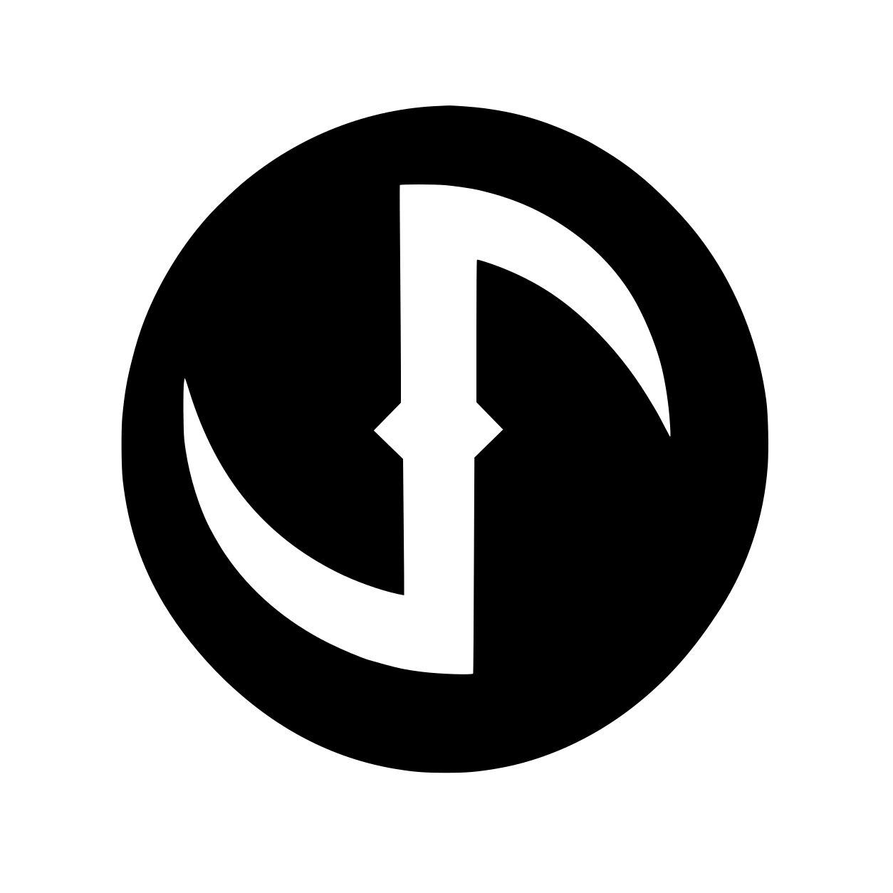

Lebende Referenz, kein Wegwerf-Prototyp mehr: diese Datei wird nach jedem Merge in styles.css/app.js aktuell gehalten, damit sie jederzeit den Status quo aller Kartentypen/-farben zeigt (Kosten oben rechts, Titel darunter, Typ-Symbol unten rechts im Hintergrund, Schriften Friz Quadrata Bold (Titel) / Charter Roman (Text) mit Ersatzschriften). Bei künftigen Farb-/Größen-Anpassungen zuerst hier ändern und abgleichen, dann 1:1 in die Produktions-Dateien übernehmen.

6 Chaosbogen Wirken: Füge 3 Schaden zu. +2 Schaden für jeden gebundenen Zauber, der an diesen Riss direkt angrenzt.Übernommen aus dem keywords-Feld des Original-Randomizers (github.com/on3iro/aeons-end-randomizer), begrenzt auf die in unserer Anwendung tatsächlich verfügbaren Spiele/Erweiterungen: 44 unserer 179 Marktplatzkarten tragen mindestens ein solches Keyword, verteilt über 7 Werte (Schwach, Stark, Impuls, Echo, Verknüpfbar, Anhängen, Betäuben). Schwach/Stark stammt aus der Legacy-Kampagne (Auf-/Abwertungsstufe einer Karte) und bekommt bewusst die Tier-Farben (Rot/Gold) — alle anderen Keywords sind reine Mechanik-Marker und bleiben neutral eingefärbt. Die Pille sitzt in der Meta-Zeile direkt hinter dem Typ-Namen, damit sie beim Scannen des Marktplatzes sofort mit auffällt, ohne eine eigene Kartenzeile zu verbrauchen. Noch nicht final: ob mehrere Tags pro Karte (siehe Kristall unten, „Impuls" + „Stark") auf Dauer zu unruhig wirken.
Gleiche Kartenbasis wie oben, aber ohne Kosten-Zeile (Schätze haben keine Æther-Kosten, nur eine Stufe 1–3). Effekttext stammt aus data.js (übernommen aus dem Original-Randomizer) und enthält bereits eigenes Markup wie <b> oder <span class="aether">.
Schmale Pillen statt großer Karten (.chip.chip--nemesis) — die verbesserten Nemesis-Karten, die vor einer Expedition bereitgelegt werden. Ohne Hintergrund-Symbol; die SVGs (Schwert, Sanduhr, Totenkopf) sind in CARD_TYPE_ICON_SVG für diesen Fall hinterlegt.
Kompakte .chip-Kachel für Kontexte mit vielen Magiern gleichzeitig (Charakterauswahl, Kaserne) — ohne Typ-Akzentfarbe, mit rundem Tier-Rating-Label (.chip__tier) oben rechts. Die Farbe (Gold/Grün/Türkis/Amber/Rot) macht die Wertigkeit auf einen Blick erkennbar; rein informell, ohne Spiellogik.
Volle Kartenkomponente analog zu Zauber/Kristall/Artefakt: Name, darunter kleiner die Rolle als Untertitel, Effekttext (die eigentliche Fähigkeit des Magiers), Hintergrund-Symbol unten rechts (hier: Schleuder-Icon (Linien-SVG, wie die übrigen Typen)) sowie das Tier-Label — bei dieser Variante direkt als rundes Badge in der Karte oben rechts statt außen überstehend wie beim Chip, da die Karte overflow: hidden hat.